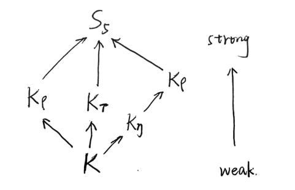
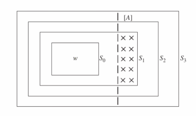
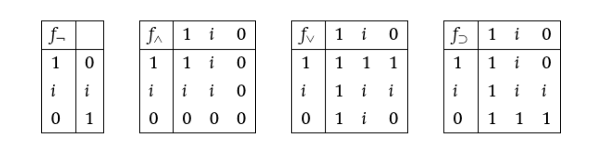
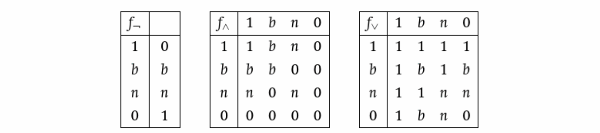
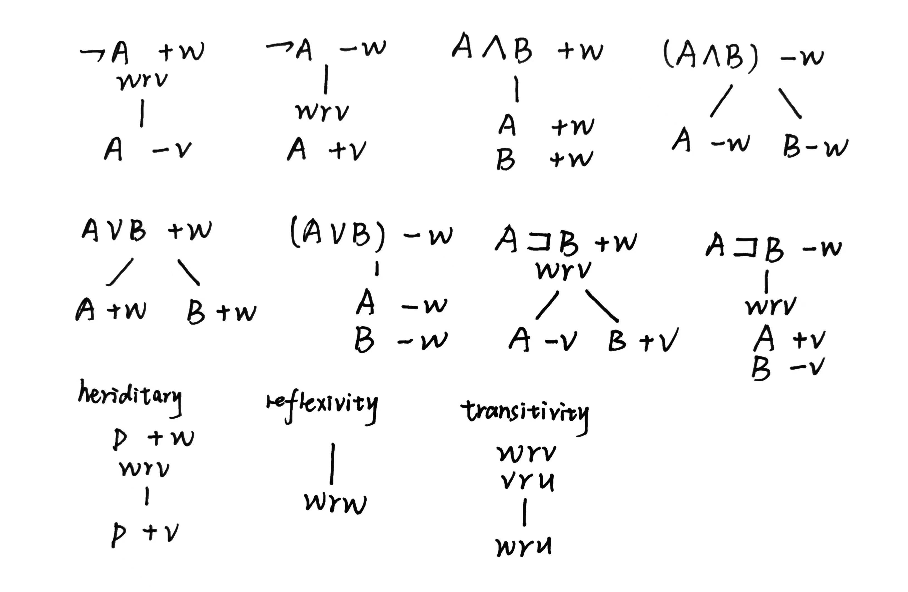
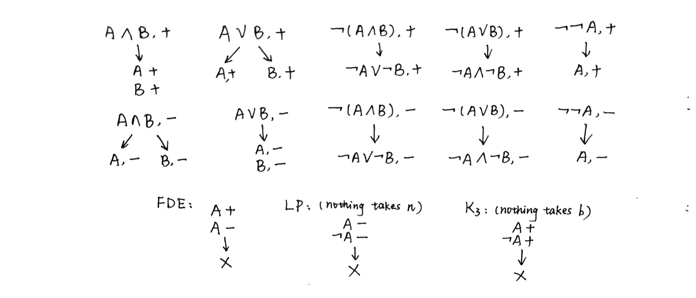
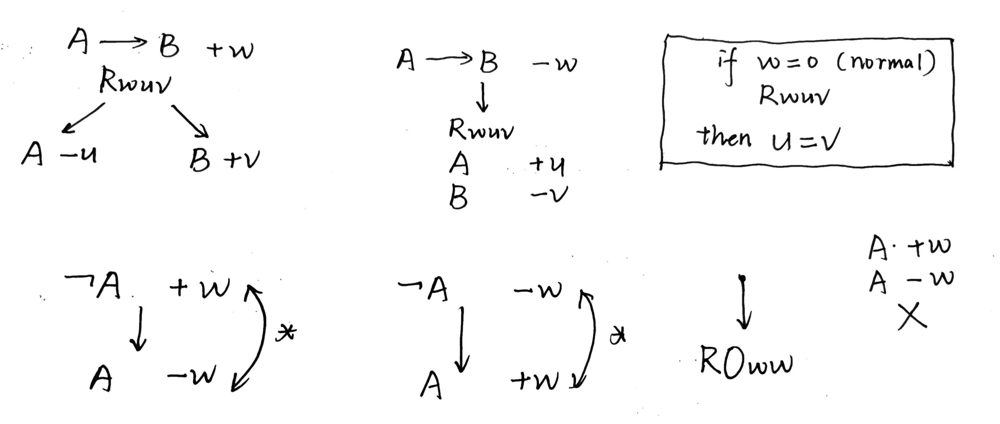

非经典逻辑
凡是可说的东西，都可以明白地说，凡是不可说的东西，则必须对之沉默。
—— 维特根斯坦
记录一下 NUS 讲非经典逻辑的这门课，课号是 PH2112。
This article is a self-administered course note.
It will NOT cover any exam or assignment related content.
经典逻辑 Classical Logic
经典逻辑其实就是命题逻辑。惊喜的发现这一部分已经在离散数学里学过了！
argument: premise(s) + conclusion.
- an argument is valid just in case if the premises are True, then the conclusion is True.
- an argument is sound just in case if it's valid and its premises are True.
Language - surface form (in case of a fire, do not use the lift) - logical form (less ambiguity)
Interpretation - a function which assigns True or False to each sentence (aka propositions).
truth-functional - negation, conjunction, disjunction, conditional, biconditional.
- redefine validity \(\models\): An argument is valid iff in every interpretation (row) in which the premises are true so is the conclusion.
- equivalance: Two arguments are equivalent if they are the same in every row of the truth table.
- tautology: An argument is a tautology, iff it is True in every row of the truth table.
- contradiction: An argument is a contradiction iff it is False in every row of the truth table.
经典逻辑的最大问题在于它 poorly describes if - 这一点我在 2121 里就有所察觉。给定命题 \(A,B\) 与 \(A\supset B\)，经典逻辑认为以下 arguments 是 valid 的：
- if \(A\) is False, \(A\supset B\) is True (negative paradox).
- if \(B\) is True, \(A\supset B\) is True (positive paradox).
经典逻辑在这里展现出的矛盾即是 paradoxes of material implication。
模态逻辑 Modal Logic
The model semantics employs the notion of a possible world.
S5 Modal Logic
引入的两个新的重要算子 necessity \(\Box\) 与 possibility \(\Diamond\)。
- Grammar. If \(A\) is a formula, so are \(\Box A\) and \(\Diamond A\).
- \(\Box A\) is True at \(w\) iff \(A\) is True of \(v\) for all \(v\).
- \(\Diamond A\) is True at \(w\) iff \(A\) is True of \(v\) for some \(v\).
模态逻辑通过 enforce 严格条件 (strict conditionals) 来规避经典逻辑中 \(\supset\) 产生的悖论。具体来说，经典逻辑将 "If \(p\), then \(q\)" 翻译为 \(p\supset q\)，而模态逻辑则翻译为 \(\Box(p\supset q)\)。
Normal Modal Logics
引入 relation \(R\) 来描述世界间的 accessibility。对于世界 \(w,v\)，如果 \(wRv\)，可以说 world \(w\) sees world \(v\) (在当前世界我能够想象到的其他差异世界)。对应的，修改 \(\Box\) 与 \(\Diamond\) 的定义如下。
- \(\Box A\) is True at \(w\) iff \(A\) is True of \(v\) for all \(v\) that \(wRv\).
- \(\Diamond A\) is True at \(w\) iff \(A\) is True of \(v\) for some \(v\) that \(wRv\).
定义 basic normal model logic 为 \(K\)，它给出的 \(R\) 是一个 random relation，无任何性质上的保证。在 \(K\) 上生发出了五种重要的 normal model logics。
- \(K_{\rho}\), reflexivity: for all \(w, wRw\). e.g., \(\models_{K_\rho} \Box p \supset p\)
- \(K_\sigma\) symmetry: for all \(w_1,w_2\), if \(w_1Rw_2\), then \(w_2Rw_1\). e.g., \(\models_{K_\sigma} p\supset \Box\Diamond p\)
- \(K_\tau\) transitivity: for all \(w_1,w_2,w_3\), if \(w_1Rw_2\) and \(w_2Rw_3\), then \(w_1Rw_3\). e.g., \(\models_{K_{\tau}}\Box p\supset \Box\Box p\)
- \(K_{\eta}\) extendability: for all \(w_1\), there is a \(w_2\) such that \(w_1Rw_2\). e.g., \(\models_{K_\eta} \Box A\supset \Diamond A\)
- \(S5\): for all \(w_1\) and \(w_2\), \(w_1Rw_2\) - everything relates to everything.

值得注意的是 \(K_\eta\) 常用于表示 moral necessity，在这个语境下，\(\Box\) 表示 obligatory, "ought"；而 \(\Diamond\) 表示 permissible, "may"。tautology \(\Box A\supset \Diamond A\) 于是表达了这样的道德必要性："ought implies may"。
Strict Conditionals
为解决经典逻辑中 if 定义产生的问题，strict conditional 将 if A, then B 定义为 \(\Box(A\supset B)\)。注意：
- 为保证 modus ponens \(A, \Box (A\supset B)\models B\) 成立，严格条件所对应的模态逻辑需要 at least as strong as \(K_\rho\)。
- 但无论在何种模态逻辑下，严格条件又会带来新的问题 (paradoxes of strict implication)。
若 \(1+1=2\) 是 logical truth，下列反直觉的 strict implications 在严格条件下却是 valid 的。
- If Brisbane is in Australia, \(1+1=2\): \(\Box B\models \Box(A\supset B)\)
- If \(1+1\neq 2\), Brisbane is in Germany: \(\lnot\Diamond A\models \Box(A\supset B)\)
条件逻辑 Conditional Logic
日常生活中的论证常常是隐去前提的，即 enthymemes。
当我在说 明天不下雨，我们就去打羽毛球吧 时，这句话同样隐含了 1) 明天我的羽毛球拍不会坏 2) 明天羽毛球场有空位 3) 明天我的手不会受伤 4) 明天外星人不会入侵羽毛球场 …… 等一系列 open-ended and indefinite 的前提。从这里下手，无论是实质还是严格条件都会有被推翻的风险 (Antecedent strenthening, Contraposition 等规则会变得反直觉)。
条件逻辑引入了 ceteris paribus (the Latin for 'other things being equal') clause：当我在说 明天不下雨 时，我实际说的是 在明天不下雨，且其他事物不变的世界里，我们去打羽毛球吧。
在模态逻辑 \(K_v\) 下 (不考虑世界之间 accessibility 的逻辑，其实是 \(S5\))，条件逻辑 \(C\) 把 if A then B 定义为 \(A>B\): \[ v_w(A>B)=1\text{ iff for all }w' \text{ such that } wR_Aw', v_{w'}(B)=1 \] 这里的 \(R_A\) 即是 ceteris paribus，它表示在世界 \(w'\) 中有 \(A\) 为真，且除此之外的事物均与 \(w\) 相同。
此外，再引入 notations \(f_A(w)=\{x\in W:wR_Ax\}\) 与 \([A]=\{w:v_w(A)=1\}\)。使用这个表示，我们可以把条件逻辑 \(C\) 写为：\(V_w(A>B)=1\text{ iff } f_A(w)\subseteq [B]\)。
\(C^+\) 则在 \(C\) 的基础上添加了两个符合直觉的限制。
- \(f_A(w)\subseteq [A]\). it's natural to require \(A\) to be true at \(w'\) if \(wR_Aw'\).
- If \(w\in [A]\), then \(w\in f_A(w)\). if \(A\) is already true in \(w\), then, presumably, the worlds that are essentially the same as \(w\) except \(A\) is true there, must include \(w\) itself.
Similarity Sphere
我们说 \(f_A(w)\) 是 the worlds essentially the same as \(w\) except that \(A\) is true there；这个 essentially 的程度值得商榷。也就是说，在 ceteris paribus clause \(R_A\) 中同样也分重要程度。
藉此我们不妨把所有世界按照与 \(w\) 的相似程度 (similarity) 划分成若干个相互包含的球面 (sphere) \(S_1,S_2,...\)，并重新定义 \(f_A(w)=S_i\cap [A]\text{ for the smallest }i\)。也就是说，我们定义这个 essentially 的程度为：应当有这么一个世界的集合，它与 \([A]\) 有重合，且尽量使得该世界集合尽量与 \(w\) 相似。

易证这样的定义满足约束 \((1),(2)\)，因此它是 \(C^+\) 的一个 extension。
除此之外，这样的结构又带来了三个新的约束 (画出 \(f_A(w), [A], f_B(w), [B]\) 的韦恩图易证)：
- If \([A]=\emptyset\), then \(f_A(w)\neq \emptyset\).
- If \(f_A(w)\subseteq [B]\) and \(f_B(w)\subseteq [A]\), then \(f_A(w)=f_B(w)\).
- If \(f_A(w)\cap [B]\neq \emptyset\), then \(f_{A\land B}(w)\subseteq f_A(w)\).
约束 \((1),(2),(3),(4),(5)\) 定义下的条件逻辑为 \(S\)。
\(C_1\) and \(C_2\)
在 \(S\) 的基础之上，\(C_2\) 又添加了一个新的约束：
- If \(x\in f_A(w)\) and \(y\in f_A(w)\), then \(x=y\).
\((6)\) implies that for any world, \(w\), if there are any worlds at which \(A\) is true, then there is a unique world closest to \(w\) at which \(A\) is true.
该约束可以很容易的基于世界的对称性反驳：Bizet-Verdi couterfactuals。Bizet 与 Verdi 是同时代人，但一个是法国人，一个是意大利人。那么，一个 Bizet 与 Verdi 同时是法国人，或者同时是意大利人的世界显然与我们所在的世界有着同样的相似度 (一个他们同时是德国人的世界则离我们的世界更远)。
\(C_2\) 条件逻辑中，Conditional Excluded Middle 条件排中律 \((A>B)\lor (A>\lnot B)\) 成立 (在 \(S\) 中不成立)。
条件排中律是有问题的。令 \(A\) 为 it will rain tomorrow or it won't, \(B\) 为 it will rain tomorrow。显然 \(A>B\) 与 \(A>\lnot B\) 均为假，但条件排中律却判断 \((A>B)\lor (A>\lnot B)\) 为真。
David Lewis 发现了这个问题，他定义了 \(C_1\)，将 \((6)\) 替换成了 \((7)\)：
- If \(w\in [A]\) and \(w'\in f_A(w)\), then \(w=w'\).
\((7)\) implies that if \(A\) is true at \(w\), then the most similar worlds at which \(A\) is true comprise just \(w\) itself (Any world is more similar to itself than any other world).
注意 \((2)\) 与 \((6)\) 可以推断出 \((7)\)，但反之则不行。这说明 \(C_2\) 可视作 \(C_1\) 的 extension。
条件排中律在 \(C_1\) 中不成立，但命题 \(A\land B\models A>B\) 成立 (在 \(S\) 中不成立)；该命题显然也是有问题的，经典的相关性与因果性混淆：If the fortune-teller says that you will come into a large sum of money, you will。
本章中的所有条件逻辑按强度升序排列为 \(C,C^+,S,C_1,C_2\)。
直觉主义逻辑 Intuitionist Logic
承自柏拉图主义的数学思想，直觉主义者认为，存在的事物一定是可构造的。
在直觉主义逻辑中，\(A\) 为真表示 \(A\) 本身的可能性，或可证明性 (provability)；而 \(\lnot A\) 为真表示 \(A\) 的不可能性，或可证否性 (refutability).
- 如果在世界 \(w\) 发现 \(A\) 是可证明的，那么在所有 \(wRv\) 的世界 \(v\)，\(A\) 均为真 (继承约束 heriditary constraints)。
- 如果在世界 \(w\) 发现 \(A\) 是可证否的 (\(\lnot A\))，那么在所有 \(wRv\) 的世界 \(v\)，\(A\) 均为假。
按照这个定义扩展直觉主义逻辑的规则。
- \(\lnot A\) is true at \(w\) iff \(A\) is false at all worlds \(v\) accessible from \(w\).
- \(A\land B\) is true at \(w\) iff \(A\) is true at \(w\) and \(B\) is true at \(w\).
- \(A\lor B\) is true at \(w\) iff \(A\) is true at \(w\) or \(B\) is true at \(w\).
- \(A\supset B\) is true at \(w\) iff \(A\) is false or \(B\) is true at all world accessible from \(w\).
- If \(p\) is true in \(w\), it is true at all worlds \(v\) accessible from \(w\).
直觉主义逻辑中的 accessibility relation 有自反性与传递性。怎么理解呢？在直觉主义逻辑中，一个世界包含了所有证明某事物成立所需要的知识。\(wRv\) 表示世界 \(v\) 含有世界 \(w\) 中的所有知识。显然，对称性在这种定义中是不成立的。
值得注意的是，一些经典的重言式，例如排中律 \(P\lor \lnot P\)，与双重否定的消除 \(\lnot \lnot P\supset P\)，在直觉主义逻辑中都是不成立的 (但 \(P\supset \lnot \lnot P\) 成立：双重否定仅能介入，但不能除去)。
多值逻辑 Many-Valued Logic
两种三值逻辑。
- truth-value gap: Kleene 3-valued logic \(K_3\), Lukasiewicz modification \(L_3\)
- truth-value glut: \(LP\)
三值逻辑在 true 与 false 之外引入了新的值：Neither (true or
false) 或 Both (true or false)。(e.g.,
truth-value gap 或 truth-value glut)。此外，还对
validity 进行了重定义: An argument is valid iff in every interpretation
(row) in which the premises are true "good" (\(D\)) so is the conclusion.
\(K_3\) 的真值表如下：

Lukasiewicz 发现，\(\not\models_{K_3} p \supset p\)；这意味着 \(K_3\) 下不存在任何 logical truth！于是他对 \(\supset\) 的规则做了唯一的修改 (\(p\supset p\) is always true)，得到了 \(L_3\)。
\(LP\) 与 \(K_3\) 的真值表相同，它们 ('both' vs. 'neither') 之间唯一的区别是对 \(D\) 的定义。
- "neither" logic \(K_3, L_3\): \(D=\{\text{True}\}\)
- "both" logic \(LP\): \(D=\{\text{True}, \text{Both}\}\)
排中律在这两个真值表相同的逻辑中表现不同：\(\not \models_{K_3} p\lor \lnot p\), \(\models_{LP} p\lor \lnot p\)。并且，modus ponens 在 \(LP\) 中失效了 \(p \land (p\supset q) \not\models_{LP} q\)。
"neither" truth-value gap 能够解释的问题：
- Denotation Failure (福尔摩斯有三个姑妈：非真也非假).
- Future Contingents (亚里士多德海战悖论：明日有海战，既非真，又非假)
"both" truth-value glut 能够解释的问题：
- Inconsistent Laws (土人无选举权；有产者有选举权；土人有产者既有又没有选举权).
- Paradoxes of Self-reference (罗素悖论中的集合既属于它自身又不属于它自身；也有人使用 neither 来解释，但这样 Contradiction Law \(p\land \lnot p\) 将会失效).
此外，和 \(L_3\) 之于 \(K_3\) 一样，\(LP\) 也有其修改版 \(RM_3\) (解决了 positive, negative paradox，获得了 modus ponens，仍不具有 modus tollens)。
一阶蕴涵逻辑 First Degree Entailment
关于 First-Degree Entailment 最重要的一点是: Being false (relate to \(0\)) does not mean being untrue (not relate to \(1\)). Also, being untrue does not mean being false。这一特点使 FDE 天然的连接上了四值逻辑 (4-valued logic)，一个命题有四种可能的值: \(0,1,n,b\) (false, true, neither, both)。
那么 FDE 的真值表就呼之欲出了。与三值逻辑相比，它仅仅新定义了 \(b\land n=0, b\lor n=1\)。
- \(A=b, B=n\)。因为 \(A,B\) 并不同为真，因此 \(A\land B\) 非真。又因为 \(A=b\) (both)，\(A\) 为假，所以 \(A\land B\) 为假。\(A\land B\) 非真且假，因此值为 \(0\)。
- \(A=b, B=n\)。因为 \(A,B\) 并不同为假，因此 \(A\lor B\) 非假。又因为 \(A=b\) (both)，\(A\) 为真，所以 \(A\lor B\) 为真。\(A\lor B\) 非假且真，因此值为 \(1\)。

若在一阶蕴涵逻辑的基础上，
- 加入 constraint Exclusion: for no \(p\), \(p\rho 1\) and \(p\rho 0\)；这说明没有 \(p\) 是既为真又为假的，即没有命题值为 \(b\)；因此，FDE 化为了 \(K_3\)。
- 加入 constraint Exhaustion: for all \(p\), either \(p\rho 1\) or \(p\rho 0\)；这说明所有 \(p\) 为真或为假，即没有命题值为 \(n\)；因此，FDE 化为了 \(LP\)。
- 若兼具 Exclusion 与 Exhaustion，FDE 便化为了了经典二值逻辑。
一阶蕴涵逻辑的逻辑树见最后一节，如何解读以下四种命题。
- \([A,-] \land [\lnot A,-]=n\)
- \([A,+]\land[\lnot A,+]=b\)
- \([A,-]\land [\lnot A,+]=0\)
- \([A,+]\land[\lnot A,-]=1\)
相干逻辑 Relevant Logic
Relevant logic requires the antecedent and consequent of implications to be relevantly related (i.e., share at least one common variable).
我们介绍主要的相干逻辑 \(B:\langle W,R,*,v \rangle\)
- \(W\): set of worlds, including a normal world \(0\).
- \(R\): ternary relation \(R\subseteq W\times W\times W\). \(Rxyz\) means something like for all \(A\) and \(B\), if \(A\to B\) is true at \(x\), and \(A\) is true at \(y\), then \(B\) is true at \(z\).
- \(*\): Routley Star, \(w^{**}=w\).
- \(v\): value function.
Interpretation (可以发现相干逻辑缺少 philosophical explanations).
- normality condition: \(R0uv\) iff \(u=v\).
- \(v_w(\lnot A)=1\) iff \(v_{w^*}(A)=0\)
- \(v_w(A\land B)=1\) iff \(v_w(A)=1\) and \(v_w(B)=1\)
- \(v_w(A\lor B)=1\) iff \(v_w(A)=1\) or \(v_w(B)=1\)
- \(v_w(A\to B)=1\) iff \(\forall Rwuv\), \(v_u(A)=0\) or \(v_v(B)=1\) (\(\lnot A\lor B\))
由于限制前提与结论至少共有一个逻辑变量，相干逻辑很好的避免了爆炸原理 (Principle of Explosion, Ex Falso Quodlibet)，即 \((p\land \lnot p)\to q\) 总为真；但是，通常被认为是自然的 Disjunctive Syllogism \((p\lor q),\lnot p \to q\) 在相干逻辑中却是 invalid 的。
\(DW\) 逻辑在 \(B\) 逻辑的基础上添加了规则：\(Rwuv\to Rwu^*v^*\)。
逻辑实证主义 Logical Positivism
一个句子，当且仅当它所表达的命题或者是分析的，或者是经验上可以证实的，这个句子才是字面上有意义的。
— A.J. Ayer 《语言，真理与逻辑》
维也纳学派 (Vienna Circle) 由一群哲学家，数学家和物理学家组成，在 1924 年由 Moritz Schlick 领导建立。小组在 1927 到 1929 年间，同维特根斯坦一直保持着定期的讨论。该小组提出了逻辑实证主义 (Logical Positivism) 的概念，尝试将哲学转化为「科学哲学」(Scientific Philosophy)，以避免因模糊的语言和无法证实的主张造成的 confusion。
逻辑实证主义建立在大大发展完善的逻辑学之上 (罗素的「逻辑构造」logical construction 概念，维特根斯坦的「逻辑原子论」，休谟的「先验/后验观念论」)，并受到科学实证论 (Empirical Science) 的影响。
1936 年随着 Schlick 被刺杀，以及纳粹势力对奥地利知识界的迫害，维也纳学派逐渐消散。逻辑实证主义者们四散到英美等英语国家，在那里逻辑实证主义发展为更温和的逻辑经验主义 (Logical Empiricism)，主要由 Carl Hempel 领导。逻辑经验主义奠定了分析哲学 (Analytical Philosophy) 的基础，并广泛影响了心理学与社会学等新兴学科。
逻辑实证主义运动作为具有广泛影响力的哲学运动，存在严重的思想缺陷 (the verifiability criterion of meaning was itself unverified)，也饱受各路哲学家批评。A.J. Ayer 甚至打趣说「逻辑实证主义最重要的缺陷在于它几乎全部是错误的」。该运动式微于 20 世纪 70 年代；1967 年 John Passmore 宣称逻辑实证主义已经「死了，就像它曾经是一场哲学运动一样死了」。
逻辑实证主义将所有 statements 分为三类 (因此它也能被三值逻辑表达)：
- Tautologies (Analytic Statements). Their truth is self-contained and independent of the external world. Often reveal something about the logical or linguistic structure. e.g., "All bachelors are unmarried", or "\(2 + 2 = 4\)". These statements are cognitively meaningful.
- Verifiable by Experience (Empirically Verifiable). Can be confirmed or falsified through observation or experiment. e.g., "It's raining outside", or "Water boils at 100C under standard atmospheric pressure". These statements are scientifically meaningful.
- Nonsense (Metaphysical). Neither be verified by experience nor are they tautologically true, thus lack cognitive significance. e.g., "God exists", or "The universe has a purpose".
经典逻辑实证主义将神学，伦理学与美学均视为形而上学的范畴，因此是无实在含义的。这些领域内的 statements 被逻辑实证主义者视为 emotionally significant, but not literally significant.
逻辑树 Tableau
证明 \(A\models B\) 的利器。
递归的对 \(A\) 与 \(\lnot B\) 进行原子化，遇 \(\land\) 继承，遇 \(\lor\) 分叉。逻辑树的每一个枝杈是 argument 的一个 interpretation。若枝杈发展到最后，存在 \(p\) 与 \(\lnot p\) 的 contradiction，我们标记该枝杈为 closed。若逻辑树的每一个枝杈都 closed，说明每种 interpretation 都能保证在 \(A\) 为真的前提下 \(B\) 一定非假；这符合 validity 的定义。
证明 \(A\) 是 tautology \(\models A\)：对 \(\lnot A\) 进行展开。证明 \(A\) 是 contradiction \(\not \models A\)：无需 negate。
模态逻辑树则稍微复杂一点。我们需要维护一个由 possible world set，并在每一个世界都检查是否有矛盾出现。
- \(\Box A,w +wRv \longrightarrow A,v\) for all old \(v\)
- \(\Diamond A,w\longrightarrow wRv+A,v\) for a new \(v\) (因此，尽量先做 \(\Diamond\) 来增加世界).
- \(\lnot \Box A\equiv \Diamond \lnot A\), \(\lnot \Diamond A\equiv \Box \lnot A\).
\(C^+\) 下的条件逻辑树。
- \(A>B,w + wr_Av \longrightarrow B,v\)
- \(\lnot(A>B),w \longrightarrow
wr_Av+\lnot B,v \ (C)+A,v \ (C^+)\)
- \(\lnot A, w \ (C^+)\)
- \(A,w+wr_Aw \ (C^+)\)
直觉主义逻辑树。这里 \(A\) 的真与假分别用 \(+/-\) 表示；当 \(A,+w\) 与 \(A,-w\) 同时出现时，该 branch 将会被 close。

一阶蕴涵逻辑树。这里 \(A\) 若被 \(+\) 表示，说明其为真 \((1, b)\)；若被 \(-\) 表示，说明其非真 \((0, n)\)。

相干逻辑树 \(B\)。注意，和模态逻辑类似，这里分解 \(A\to B,-w\) 产生 \(Rwuv\) 时 \(uv\) 一定是 new worlds。

Reference
This article is a self-administered course note.
References in the article are from corresponding course materials if not specified.
Course info: PH2112 Non-Classical Logic. Prof. Ben Blumson.
Course textbook: From If to Is: An Introduction to Non-Classical Logic, 2008, Graham Priest